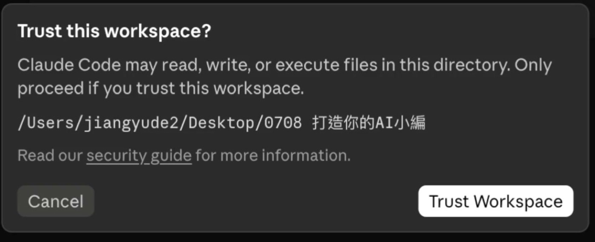
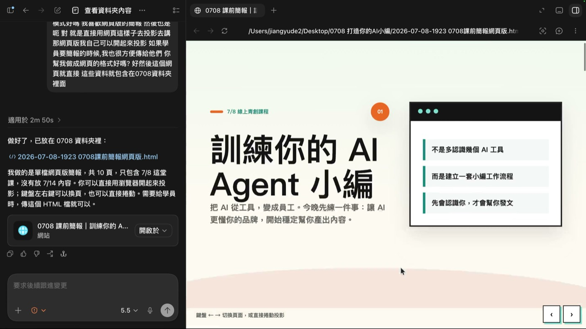

很多人學 AI，卡在一直追新工具、一直背提示詞。這堂課想換一個方向：把問題從「我要怎麼學會用 AI」，換成「我要怎麼讓 AI 認識我」。當 AI 讀得到你的資料、記得你的判斷、懂你的風格，它才會從聊天框變成能幫你做簡報、整理問卷、寫社群內容、沉澱工作日誌的小編。
- 剛開始用 ChatGPT、Gemini、Claude 或 Codex，覺得每次都要重講背景的人。
- 一人公司、內容創作者、小編、講師或小微企業主，想把 AI 變成能持續幫忙的工作夥伴。
- 手上有很多文章、問卷、簡報、工作日誌，卻不知道怎麼整理成 AI 能用的知識庫的人。
- 分清「聊天型 AI」和「幹活型 Agent」的差別，知道為什麼資料要住在自己的系統裡。
- 一套訓練 AI 小編的三層記憶：工作日誌、技能包、交接文件。
- 從安全練習、問卷變簡報、靈感池、AI 顧問到社群產出的完整起步路線。
這份簡報，是我的 AI 小編做的
課程一開始，我先跟學員說一個秘密：大家眼前這份簡報，是我的 AI 小編做的。
課前，主辦把報名問卷交給我。我沒有一份一份讀完、熬夜排簡報，而是把問卷和課綱放進同一個資料夾，讓 AI 先讀完全部，整理出一張「學員落點分析」。我看完這批學員是誰、卡在哪，再決定今晚要講什麼。方向定了，AI 再照我平常的版型把簡報生出來。
想法是我的，判斷是我的；剩下的編輯、排版、上架，能交給 AI 就交給 AI。因為這樣我才有時間認真研發產品、做內容。
這整套做法從頭到尾不必先寫程式。就算手邊只有網頁版 ChatGPT 或 Gemini，也可以先用專案資料、工作日誌和文件夾開始。桌面型 Agent 會更順，但真正的起點是把資料留下來。
聊天型 AI，會讓你變成 AI 的助理
先把兩種 AI 分清楚：聊天型 AI 會回你話，要你自己把結果複製出去操作；幹活型 AI，也就是 Agent，會到你的資料夾裡讀資料、改檔案、產生成品。
你跟它說要宣傳文、簡報或網頁，它給你文字；接著你要自己複製、自己貼、自己排。用久了，會覺得自己好像變成 AI 的助理。
像 Codex 這類桌面型 Agent，能讀你的專案資料夾，直接幫你整理資料、寫檔案、做出成品。它更像你請進電腦裡的 AI 小編。
更重要的是資料住在哪裡。如果資料散在各家 AI 的聊天紀錄裡，今天傳給 ChatGPT，明天傳給 Gemini，後天又傳給 Claude，每次都要重新交代。桌面型 Agent 的價值，是讓各家 AI 都來讀同一份資料、同一份記憶，協作才有地基。
先學會安全：三個保命習慣
Agent 能動你的電腦，所以第一課先講安全，效率放後面。新手不要一開始就把全部權限打開，先用安全邊界練習。

每次要編輯檔案、上網查資料或執行指令，都先看懂它要做什麼。看不懂，就請它解釋或擋下來。
新開一個專案資料夾，只讓 AI 在那裡操作，不要讓它一開始就碰主知識庫或重要資料。
把真實工作複製一份，或開一個空資料夾。做壞了也不心疼，練熟再接真工作。
還有一條我自己一定會加的規矩。備份做好之後，再跟它講一個機制：
這樣就有回復的安全。AI 判斷錯了、移錯了，東西都還在垃圾桶裡，你隨時撿得回來。這條規矩很短，但它是我所有安全習慣裡最值得先做的一條。
把問卷變成簡報：第一個 AI 小編工作流
課堂上我示範的第一個流程很樸素，但很適合新手練習。它的做法是先讓 AI 理解資料，再分段交付，不用一口氣要它生出完美簡報。

把課綱、學員問卷、相關素材複製到同一個資料夾，讓 AI 的工作範圍清楚。
請它先看資料夾有什麼內容，確認沒漏檔，再往下交辦。
生成圖形又貴又慢。先看它的文字計畫，確認理解方向，再讓它動工。
用 HTML 網頁簡報，速度快、彈性高，也能直接分享網址。
不要只說「不好看」。把字級、色碼、版面需求講清楚，AI 才能穩定修。
草稿一出來就存檔。之後改第一句就只改第一句，不會整份重新生成。
這六步裡，最容易被跳過的是第二步和第三步。多數人一上來就叫 AI 做成品，做出來不對再重講，來回三四次還是不對。我的做法是先確認它讀到了什麼：
它把檔案列出來，你才知道有沒有漏檔、有沒有讀錯資料夾。確認之後再交辦，而且先要文字，不要直接讓它生成成品：
生成圖形又貴又慢，方向錯了整份重做。先看文字計畫，確認它真的理解你要什麼，再讓它動工。
修改的時候也要具體。不要只說「不好看」，要像這樣講：
還有一個很多人踩的坑：草稿一出來就先叫它存成檔案。如果它一直停在聊天框裡，你每改一次它就整份重新生成一遍。存成檔案之後，你說改第一句，它就只改檔案裡的第一句，其他都不會動到。
那張「學員落點分析」也是重點。它把一班人的問題整理成地圖，讓我看出大家卡在哪裡、哪些核心問題答完能幫到最多人。磨順之後，我只要說「幫我整理成落點地圖」，AI 就知道我要什麼。這就是把你的判斷訓練成 AI 記得住的能力。
讓 AI 記住你：工作日誌、技能包、交接文件
做完一次任務，最值錢的東西是對話裡的規則、判斷、美感和品牌理念，成品反而其次。如果不記下來，下次就要重講一遍。我把記憶分成三層。
任務結束時，請 AI 把對話中所有有價值的訊息記錄成檔案。這是最簡單也最重要的起點。
工作日誌像口頭承諾，技能包像白紙黑字的合約。把穩定流程寫成 AI 讀得懂的正式操作手冊。
新 Agent 一進來就知道自己能讀哪些資料、不能做什麼、你的工作流程和風格是什麼。
第一層最簡單，也最該今天就做。每次任務結束前，跟它說這一句：
它會生出一份 Markdown 檔，存在你指定的資料夾裡。Markdown 是 AI 自己最好讀的檔案格式，用記事本就能打開。這一份就是你知識庫的第一塊磚。
但工作日誌只是參考用的，跟提示詞很像，提示提示而已。想讓 AI 每次都照同一套流程做事，要往上一層：
技能包（Skill）你可以理解成一份操作手冊，就像開公司會有 SOP。它跟工作日誌的差別在約束力：MD 只是檔案格式，像 HTML、PDF、TXT 一樣；而 Skill 是一份協議。工作日誌像我口頭跟你講「好啦明天幫你整理」，技能包像一份白紙黑字的合約，對 AI 有強得多的約束力。
技能包本身也是用 Markdown 寫成的，所以你不用學新東西。你說「幫我做成技能包」，它就會自動照規範產出，因為它內建就有一個「幫大家做技能包的技能包」。做完之後，下次我只要把課綱跟學員問卷丟給它、說要做簡報，它就會自動啟動那個教學簡報技能包，把剛剛那整套流程跑完一次。
技能包的名字要取清楚。做簡報的、做圖卡的、做提案頁的，之後會越來越多，名字含糊就會亂。
還有第三層要注意。如果你會換著用不同的 AI，記憶要放在同一個地方，不然這家記得、那家不知道：
沒有 Agent，也能今天就開始
如果電腦裝不了桌面型 Agent，或目前只習慣網頁版，也不用等。真正的核心是把資料留下來，讓 AI 有東西可讀。
- 用 ChatGPT：開一個專案，把過去文章、品牌設定、常用語氣和案例丟進資料來源，先做成一個小知識庫。
- 用 Gemini：搭配 NotebookLM，把資料整理成可追問、可引用的知識集合。
- 不管用哪一家：每次做完任務，都請它把過程寫成工作日誌，存成你自己手上的文件。
網頁版的缺點，是資料容易綁在單一生態。長期來說，我還是推薦把資料整理在自己的資料夾和知識庫裡，再讓不同 AI 來讀同一份資料。
把 AI 當顧問、陌生客戶和市場翻譯
AI 小編不只幫你排版，也可以幫你看見自己看不到的盲點。重點是給它具體對標、具體角色和具體任務，別停在抽象需求。
不要只說「請你當資深企業顧問」。你要說清楚對標誰、欣賞哪一面、要它從什麼角度提醒你。像我會把納瓦爾做成顧問技能包，特別提醒自己一人公司、平衡和長期複利。
新產品、新課程或新文案，可以先讓 AI 模擬不同受眾來試看、指出哪裡看不懂。這不能取代真人市場，但很適合在早期幫你抓盲點。
專業者常寫出自己覺得很重要、但受眾沒有感覺的內容。請 AI 從讀者痛點、語言和情境重寫標題與開場，讓專業能被看懂。
如果你連自己的定位都還講不清楚，先讓 AI 用問的把它挖出來，不要自己硬想：
重點在「一次問我一個問題」。少了這句，它會一口氣丟十個問題給你，你反而答不動。
靈感池：讓發文穩定又有你的味道
穩定發文靠的是平常就把靈感留下來，不用每天硬想今天要發什麼。看到一則案例、一句學員提問、一段市場反應，不只收藏，還要多寫一句：為什麼覺得有用？什麼情境會用？
累積一陣子之後，你手上會有一堆零散筆記。這時候讓 AI 幫你把它們變成可以用的靈感詞：
下標籤這一步是關鍵。有標籤，同主題的東西才會自己靠在一起，你才看得出自己其實一直在講什麼。
要發文時，再讓 AI 把「一個吸引人的梗＋真實的受眾情境＋你的解方」組合起來。這樣產出的內容才不只是模板，也會有你的味道。
你要練的，其實是組織管理
更遠一點看，Agent 會越來越像一支團隊。你可能有一個 AI 大總管，底下管著不同小編、研究員、設計師、審稿員。人不再每一步都自己做，而是在旁邊看方向、做判斷、設規則。
所以真正的關鍵能力，是組織管理能力。現在的 Agent 就是你的 AI 員工；未來拚的是誰更會訓練、更會交辦、更會把一群 AI 員工組織起來。
這也是為什麼我說，鋼鐵不是拿來補木頭房子的。大部分人用 AI，還停在替舊流程打補丁；真正的機會，是用 AI 重新設計一棟房子。
你的第一步
不用一次做完整套。今天先做一件事：打開你正在用的 AI，把下面這句貼給它。
然後把它生出來的那份工作日誌，存進你自己的資料夾。不用管格式對不對、內容夠不夠完整，先有第一份就好。
你的知識庫，就從這一份工作日誌開始長。
編註與查證說明
本文由 2026-07-08 嘉我好漾線上青創課「訓練你的 AI Agent 小編：把 AI 從工具，變成員工」逐字稿與教學手冊整理而成。課堂中的外部案例（例如品牌用 AI 模擬消費者測試）保留為方法脈絡，正式引用時仍應以原始研究與公開資料為準。